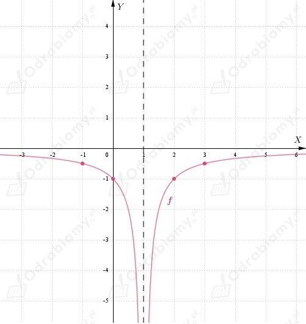
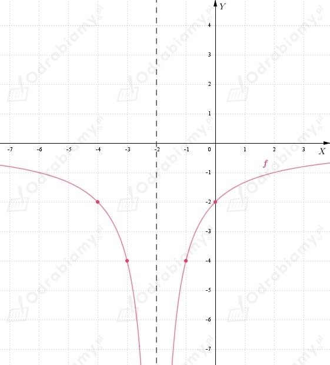

Definicja granicy niewłaściwej równej -oo.
| Niech f będzie funkcją określoną w sąsiedztwie punktu x0. Funkcja f ma w punkcie x0 granicę niewłaściwą -oo, co zapiszemy:
jeśli dla każdego ciągu (xn) zbieżnego do x0, o wyrazach należących do dziedziny funkcji f i różnych od x0, ciąg (f(xn)) jest rozbieżny do -oo. |
a)
założenie:
Wzór funkcji f możemy zapisać korzystając z definicji wartości bezwzględnej:
Niech
Wyznaczamy punkty przez które przechodzi wykres funkcji:
Wykres funkcji f:

Zauważamy, ze dla x0=1 funkcja f ma granicę niewłaściwą równą -oo.
b)
założenie:
Wzór funkcji f możemy zapisać korzystając z definicji wartości bezwzględnej:
Niech
Wyznaczamy punkty przez które przechodzi wykres funkcji:
Wykres funkcji f:

Zauważamy, ze dla x0=-2 funkcja f ma granicę niewłaściwą równą -oo.